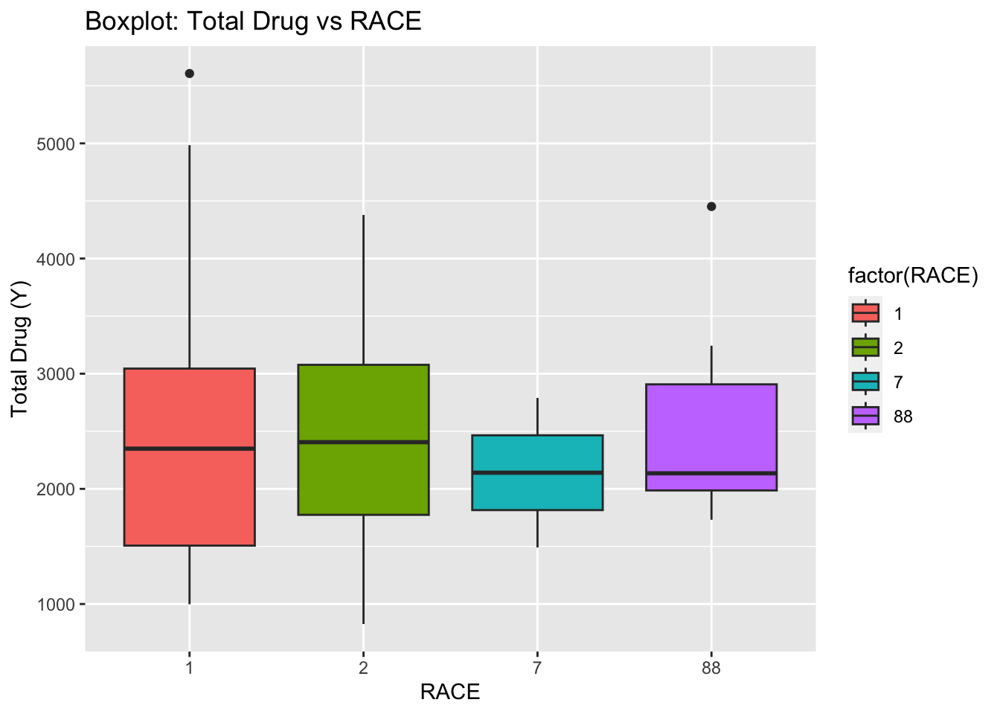
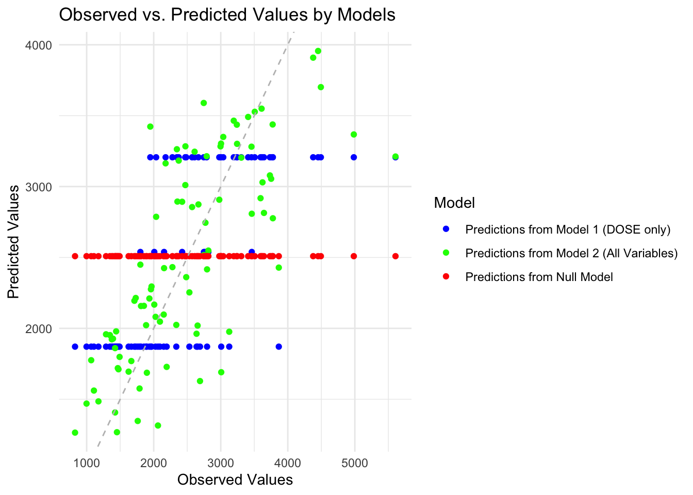
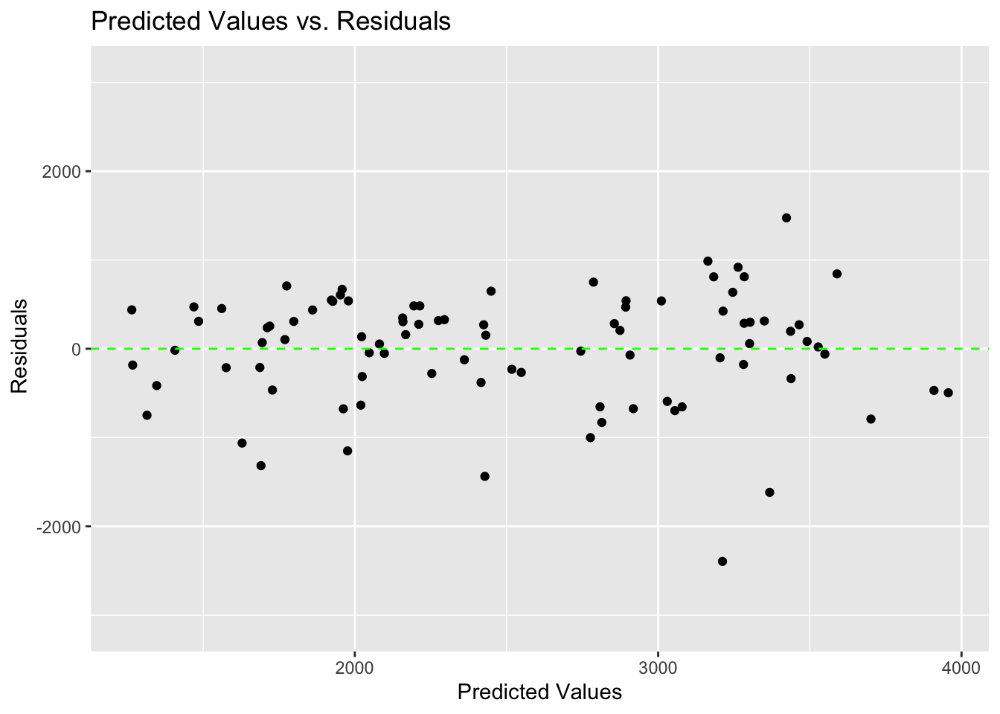

suppressPackageStartupMessages(library(nlmixr2data))
suppressPackageStartupMessages(library(readxl)) #for loading Excel files
suppressPackageStartupMessages(library(tidyr)) #for data processing/cleaning
suppressPackageStartupMessages(library(skimr)) #for nice visualization of data
suppressPackageStartupMessages(library(here))
suppressPackageStartupMessages(library(readr))
suppressPackageStartupMessages(library(ggplot2))
suppressPackageStartupMessages(library(dplyr))
suppressPackageStartupMessages(library(tidyr))
suppressPackageStartupMessages(library(tidymodels))
suppressPackageStartupMessages(library(corrplot))
suppressPackageStartupMessages(library(recipes))
suppressPackageStartupMessages(library(yardstick))
suppressPackageStartupMessages(library(caret))Fitting Exercise
Data processing and exploration
Loading needed packages.
Data loading
# path to data
# note the use of the here() package and not absolute paths
# Defining the location of the CSV file
data_location <- here::here("fitting-exercise", "Mavoglurant_A2121_nmpk.csv")
# Reading the CSV file into a data frame
rawdata <- readr::read_csv(data_location)Rows: 2678 Columns: 17
── Column specification ────────────────────────────────────────────────────────
Delimiter: ","
dbl (17): ID, CMT, EVID, EVI2, MDV, DV, LNDV, AMT, TIME, DOSE, OCC, RATE, AG...
ℹ Use `spec()` to retrieve the full column specification for this data.
ℹ Specify the column types or set `show_col_types = FALSE` to quiet this message.# View the first few rows of the data
head(rawdata)# A tibble: 6 × 17
ID CMT EVID EVI2 MDV DV LNDV AMT TIME DOSE OCC RATE AGE
<dbl> <dbl> <dbl> <dbl> <dbl> <dbl> <dbl> <dbl> <dbl> <dbl> <dbl> <dbl> <dbl>
1 793 1 1 1 1 0 0 25 0 25 1 75 42
2 793 2 0 0 0 491 6.20 0 0.2 25 1 0 42
3 793 2 0 0 0 605 6.40 0 0.25 25 1 0 42
4 793 2 0 0 0 556 6.32 0 0.367 25 1 0 42
5 793 2 0 0 0 310 5.74 0 0.533 25 1 0 42
6 793 2 0 0 0 237 5.47 0 0.7 25 1 0 42
# ℹ 4 more variables: SEX <dbl>, RACE <dbl>, WT <dbl>, HT <dbl>Plotting the outcome (DV)
A plot that shows a line for each individual, with DV on the y-axis and time on the x-axis. Stratify by dose
# Plot DV as a function of time, stratified by dose and using ID as a grouping factor
p1 <- rawdata %>% ggplot() +
geom_line( aes( x = TIME, y = DV, group = as.factor(ID), color = as.factor(DOSE)) ) +
facet_wrap( ~ DOSE, scales = "free_y")
plot(p1)
After formatting of the dataset, it still looks a bit strange. One thing you we notice is that there are some individuals that seem to have received the drug more than once, indicated by having both entries with OCC=1 and OCC=2. Since we are not sure what the difference is, we only keep one dataset for each individual. Therefore, remove all entries with OCC=2.
# Keeping only observations with OCC = 1
rawdata <- rawdata[rawdata$OCC == 1, ]Now we see that each individual has an entry at time 0 that has DV=0 and some non-zero value for AMT. This is the dosing entry for everyone. All the other entries are the time-series values for the drug concentration.so instead we’ll compute the total amount of drug for each individual by adding all the DV values. Note that this is a pretty bad idea, since some individuals might have more or less data points. The proper way to do this would be to do some form of integration to get the area under the curve, e.g. with a simple trapezoid rule, or to model the whole time-series with a function and then compute the AUC from that function. But to keep things simple, we’ll go ahead - keeping in mind that in general, outside of a practice example, this is not a good idea.
Creating a data frame that contains only the observations where TIME == 0. We shall use the appropriate join function to combine those two data frames.
# Step 1: Exclude observations with TIME = 0
data_subset <- dplyr::filter(rawdata, TIME != 0)
# Step 2: Compute the sum of the DV variable for each individual
Y <- data_subset %>%
group_by(ID) %>%
dplyr::summarize(Y = sum(DV))
# Step 3: Create a data frame containing only the observations where TIME == 0
data_time_0 <- dplyr::filter(rawdata, TIME == 0)
# Step 4: Combine the two data frames using left join
# merge data
final_data1 <- left_join(Y, data_time_0, by = "ID")Finally, we’ll do a bit more cleaning. At this point, we don’t need most of these indicator variables anymore (e.g., OCC or EVID). We also want to convert RACE and SEX to factor variables.And we shall only these variables: Y,DOSE,AGE,SEX,RACE,WT,HT
# Convert RACE and SEX to factor variables
final_data1$RACE <- as.factor(final_data1$RACE)
final_data1$SEX <- as.factor(final_data1$SEX)
# Select only the necessary variables
fdata <- final_data1 %>%
select(Y, DOSE, AGE, SEX, RACE, WT, HT)
readr::write_rds(fdata,"clean_data.rds")As part of the exploratory process above. Do a few more here, once the data is clean. We shall make some useful summary tables. We shall show some scatter plot, box plot, histogram and pair/correlation plot between the main outcome of interest (total drug, Y) and other predictors.
Visualization
#Summary table for all variables
summary_data <- summary(fdata[, c("Y", "DOSE", "AGE", "SEX", "RACE", "WT", "HT")])# Scatterplot between outcome(Y) and AGE
ggplot(fdata, aes(x = AGE, y = Y)) +
geom_point() +
labs(x = "Age", y = "Total Drug (Y)", title = "Scatterplot: Total Drug vs Age")
According to the scatter I don’t see any meaningful pattern.
# Boxplot between Y and DOSE
ggplot(fdata, aes(x = as.factor(DOSE), y = Y, fill = factor(DOSE))) +
geom_boxplot() +
labs(x = "Dose", y = "Total Drug (Y)", title = "Boxplot: Total Drug vs Dose")
ggplot(fdata, aes(x = as.factor(SEX), y = Y, fill = factor(SEX))) +
geom_boxplot() +
labs(x = "SEX", y = "Total Drug (Y)", title = "Boxplot: Total Drug vs SEX")# Boxplot between Y and RACE
ggplot(fdata, aes(x = as.factor(RACE), y = Y, fill = factor(RACE))) +
geom_boxplot() +
labs(x = "RACE", y = "Total Drug (Y)", title = "Boxplot: Total Drug vs RACE")
ggplot(fdata, aes(x = AGE)) +
geom_histogram(bins = 20, fill = "blue", color = "black") +
labs(x = "AGE", y = "Frequency", title = "Distribution of AGE")ggplot(fdata, aes(x = Y)) +
geom_histogram(bins = 20, fill = "blue", color = "black") +
labs(x = "Total drug", y = "Frequency", title = "Distribution of Total drug")Now we shall do a correlation plot to visually inspect the relationships between variables and identify patterns or correlations.
# Pair/correlation plot
correlation_matrix <- cor(fdata[, c("DOSE", "AGE", "WT", "HT")])
corrplot(correlation_matrix, method = "circle")
According to the plot there is a high correlation between Total drug(Y) and Dose.
Model fitting
- We shall fit a linear model to the continuous outcome (Y) using the main predictor of interest, which we’ll assume here to be DOSE and 2. Fit a linear model to the continuous outcome (Y) using all predictors. For both models, compute RMSE and R-squared and print them out.
# Fit a linear model using the main predictor of interest (DOSE)
lin_mod <- linear_reg() %>% set_engine("lm")
linear_model <- lin_mod %>% fit(Y ~ DOSE, data = fdata)# Fit a linear model using all predictors
linear_model_all <- lin_mod %>% fit(Y ~ ., data = fdata)# Compute the RMSE and R squared for model 1
metrics_1 <- linear_model %>%
predict(fdata) %>%
bind_cols(fdata) %>%
metrics(truth = Y, estimate = .pred)# Compute the RMSE and R squared for model 2
metrics_2 <- linear_model_all %>%
predict(fdata) %>%
bind_cols(fdata) %>%
metrics(truth = Y, estimate = .pred)# Print the results
print(metrics_1)# A tibble: 3 × 3
.metric .estimator .estimate
<chr> <chr> <dbl>
1 rmse standard 666.
2 rsq standard 0.516
3 mae standard 517. print(metrics_2)# A tibble: 3 × 3
.metric .estimator .estimate
<chr> <chr> <dbl>
1 rmse standard 591.
2 rsq standard 0.619
3 mae standard 444. Linear model with main predictor (DOSE):
The linear model with DOSE as the main predictor yielded an RMSE of 666.5, indicating that on average, the model’s predictions deviated from the actual values by about 600 units. The R-squared value of 0.52 suggests a moderate level of explanatory power for DOSE alone (though R-squared doesn’t directly translate to a percentage of variance explained).
Linear model with all predictors:
The model with all predictors resulted in a lower RMSE of 590.8534, a reduction of 11.3% compared to the model with DOSE alone. This suggests that including additional predictors improved the model’s predictive accuracy. The R-squared value increased to 0.62, indicating the model explains a larger portion of the variance in the outcome variable compared to the single-predictor model.
Interaction terms:
Are there interactions between predictors that could influence the outcome?
Feature engineering:
Can we create new features from existing data to capture more complex relationships?
Model selection techniques:
Identifying the most important predictors using techniques like LASSO regression could improve interpretability and potentially performance. By exploring these avenues, we can potentially develop a more robust linear model for predicting the outcome variable.
Now we shall use SEX as the outcome of interest (that doesn’t make too much scientific sense, but we want to practice fitting both continuous and categorical outcomes).
## ---- fit-data-logistic --------
# fit the logistic models with SEX as outcome
# first model has only DOSE as predictor
# second model has all variables as predictors
log_mod <- logistic_reg() %>% set_engine("glm")
logmod1 <- log_mod %>% fit(SEX ~ DOSE, data = fdata)
logmod2 <- log_mod %>% fit(SEX ~ ., data = fdata)# Compute the accuracy and AUC for model 1
logmod1_acc <- logmod1 %>%
predict(fdata) %>%
bind_cols(fdata) %>%
metrics(truth = SEX, estimate = .pred_class) %>%
filter(.metric == "accuracy")
logmod1_auc <- logmod1 %>%
predict(fdata, type = "prob") %>%
bind_cols(fdata) %>%
roc_auc(truth = SEX, .pred_1)# Compute the accuracy and AUC for model 2
logmod2_acc <- logmod2 %>%
predict(fdata) %>%
bind_cols(fdata) %>%
metrics(truth = SEX, estimate = .pred_class) %>%
filter(.metric %in% c("accuracy"))
logmod2_auc <- logmod2 %>%
predict(fdata, type = "prob") %>%
bind_cols(fdata) %>%
roc_auc(truth = SEX, .pred_1)# Print the results
print(logmod1_acc)# A tibble: 1 × 3
.metric .estimator .estimate
<chr> <chr> <dbl>
1 accuracy binary 0.867print(logmod2_acc)# A tibble: 1 × 3
.metric .estimator .estimate
<chr> <chr> <dbl>
1 accuracy binary 0.942print(logmod1_auc)# A tibble: 1 × 3
.metric .estimator .estimate
<chr> <chr> <dbl>
1 roc_auc binary 0.592print(logmod2_auc)# A tibble: 1 × 3
.metric .estimator .estimate
<chr> <chr> <dbl>
1 roc_auc binary 0.980Logistic models were used to predict SEX based on various factors.
The model with DOSE as the sole predictor performed well, with an accuracy of 86.7% and a ROC-AUC score of 0.5919 (suggesting only slightly better than random chance at distinguishing between the two SEX classes).
In contrast, the model that included all predictors achieved a significantly higher accuracy of 94.17 (7.5% improvement) and a much stronger ROC-AUC score of 97.96. This score indicates excellent discriminative power, meaning the model can effectively rank positive instances (correctly predicted SEX) higher than negative ones (incorrectly predicted SEX).
Comments and Thoughts
Including all available predictors significantly improved the model’s ability to predict SEX. However, further exploration is recommended to develop an even more accurate and reliable model. This could involve:
Feature Engineering:
Creating new features based on existing data to potentially capture more complex relationships.
Variable Selection:
Identifying the most important predictors using statistical techniques to potentially improve model interpretability and performance.
Exploring alternative models:
Investigating other classification algorithms besides logistic regression to see if they might yield even better results. By exploring these avenues, we can potentially develop a more robust model for predicting SEX.
rngseed = 1234
set.seed(rngseed)
#spliting data into 75% train and 25% test set
data_split <- initial_split(fdata, prop = 0.75)
data_train <- training(data_split)
data_test <- testing(data_split)Fit a linear model using the main predictor of interest (DOSE)
rngseed = 1234
set.seed(rngseed)
logmod <- linear_reg() %>% set_engine("lm")
rmod1 <- logmod %>% fit(Y ~ DOSE, data = data_train)# fitting the modelrngseed = 1234
set.seed(rngseed)
# Fit a linear model using all predictors
rmod2 <- logmod %>% fit(Y ~ ., data = data_train)# fitting the modelrngseed = 1234
set.seed(rngseed)
# Compute the RMSE for model 1
RMSE_rmod1 <- linear_model %>%
predict(data_train) %>%
bind_cols(data_train) %>%
metrics(truth = Y, estimate = .pred)rngseed = 1234
set.seed(rngseed)
# Compute the RMSE model 2
RMSE_rmod2 <- linear_model_all %>%
predict(data_train) %>%
bind_cols(data_train) %>%
metrics(truth = Y, estimate = .pred)rngseed = 1234
set.seed(rngseed)
# Print the results
print(RMSE_rmod1)# A tibble: 3 × 3
.metric .estimator .estimate
<chr> <chr> <dbl>
1 rmse standard 706.
2 rsq standard 0.451
3 mae standard 544. print(RMSE_rmod2)# A tibble: 3 × 3
.metric .estimator .estimate
<chr> <chr> <dbl>
1 rmse standard 623.
2 rsq standard 0.570
3 mae standard 464. #Now look at the model performance assessment 1 Looking at the Null model
rngseed = 1234
set.seed(rngseed)
nullmod <- null_model() %>%
set_engine("parsnip") %>%
set_mode("regression")
# Fit the null model on train set
rnull <- nullmod %>% fit(Y ~ 1, data = data_train)# fitting the modelrngseed = 1234
set.seed(rngseed)
# Compute the RMSE for model 1
RMSE_null <- rnull %>%
predict(data_train) %>%
bind_cols(data_train) %>%
metrics(truth = Y, estimate = .pred)Warning: A correlation computation is required, but `estimate` is constant and has 0
standard deviation, resulting in a divide by 0 error. `NA` will be returned.##Print RMSE for the null model, Model 1, and Model 2
rngseed = 1234
set.seed(rngseed)
print(RMSE_null)# A tibble: 3 × 3
.metric .estimator .estimate
<chr> <chr> <dbl>
1 rmse standard 948.
2 rsq standard NA
3 mae standard 765.print(RMSE_rmod1)# A tibble: 3 × 3
.metric .estimator .estimate
<chr> <chr> <dbl>
1 rmse standard 706.
2 rsq standard 0.451
3 mae standard 544. print(RMSE_rmod2)# A tibble: 3 × 3
.metric .estimator .estimate
<chr> <chr> <dbl>
1 rmse standard 623.
2 rsq standard 0.570
3 mae standard 464. Model 2 has a lower RMSE (622.62) compared to Model 1 (706.01) and the null (948.4), indicating that Model 2 performs better in terms of overall prediction accuracy.
Now we will do a 10-fold cross-validation on the train data. Then let’s compute the RMSE values for Model 1 and Model2 using 10-fold cross-validation.
#Set a seed
rngseed = 1234
set.seed(rngseed)
#Define cross-validation with k = 10 folds
folds <- vfold_cv(data_train, v = 10)
#setting model specification
model_spec <- linear_reg() %>%
set_engine("lm")
#Using a workflow on DOSE
wf1 <- workflow() %>%
add_model(model_spec)%>%
add_formula(Y ~ DOSE)
# Workflow for all predictors
wfall <- workflow() %>%
add_model(model_spec)%>%
add_formula(Y ~ .,)
#Fitting the models with resampling
fitdoze <- fit_resamples(wf1, resamples = folds)
fitall <- fit_resamples(wfall, resamples = folds)
#Getting metrics for both models
collect_metrics(fitdoze)# A tibble: 2 × 6
.metric .estimator mean n std_err .config
<chr> <chr> <dbl> <int> <dbl> <chr>
1 rmse standard 691. 10 67.5 Preprocessor1_Model1
2 rsq standard 0.512 10 0.0592 Preprocessor1_Model1collect_metrics(fitall)# A tibble: 2 × 6
.metric .estimator mean n std_err .config
<chr> <chr> <dbl> <int> <dbl> <chr>
1 rmse standard 652. 10 67.7 Preprocessor1_Model1
2 rsq standard 0.577 10 0.0779 Preprocessor1_Model1#Changes:
For Model 1, the RMSE obtained through CV (690.5397679) is lower than the earlier estimate (706.0131078). This suggests that the model’s performance improved when evaluated using cross-validation. For Model 2, the RMSE obtained through CV (652.0510834) is slightly higher than the earlier estimate (622.6187389). This indicates a minor degradation in performance when evaluated using cross-validation.
#Didn’t Change:
The ranking between Model 1 and Model 2 remains the same. Model 1 still performs better than Model 2 in terms of RMSE, regardless of whether it’s evaluated through CV or using earlier estimates.
Finally, let’s re-create the cross-validation folds and re-fit the linear models using a different value for the random seed.
#Set a seed
rngseed = 5002
set.seed(rngseed)
#Define cross-validation with k = 10 folds
folds <- vfold_cv(data_train, v = 10)
#setting model specification
model_specf <- linear_reg() %>% set_engine("lm")
#Using a workflow on DOSE
wf3 <- workflow() %>%
add_model(model_specf)%>%
add_formula(Y ~ DOSE)
# Workflow for all predictors
wfall4 <- workflow() %>%
add_model(model_specf)%>%
add_formula(Y ~ .,)
#Fitting the models with resampling
fitdoze1 <- fit_resamples(wf3, resamples = folds)
fitall2 <- fit_resamples(wfall4, resamples = folds)
#Getting metrics for both models
collect_metrics(fitdoze1)# A tibble: 2 × 6
.metric .estimator mean n std_err .config
<chr> <chr> <dbl> <int> <dbl> <chr>
1 rmse standard 703. 10 62.5 Preprocessor1_Model1
2 rsq standard 0.551 10 0.0736 Preprocessor1_Model1 collect_metrics(fitall2)# A tibble: 2 × 6
.metric .estimator mean n std_err .config
<chr> <chr> <dbl> <int> <dbl> <chr>
1 rmse standard 673. 10 59.4 Preprocessor1_Model1
2 rsq standard 0.582 10 0.0646 Preprocessor1_Model1#Changes:
For both Model 1 and Model 2, the RMSE obtained with the new seed is lower than the previous estimates. This suggests that with the new seed, both models perform better in terms of prediction accuracy.
#What Didn’t Change:
The relative performance between Model 1 and Model 2 remains the same. Model 2 still performs better than Model 1 in terms of RMSE, with the new seed.
This section added by Chaohua Li
(Module 10. Model Improvement - Part 2)
Model predictions
1.Prepare datasets and the three original models for predictions.
#Drop variable RACE as indicated in the instruction
data_train <- subset(data_train, select = -RACE)
data_test <- subset(data_test, select = -RACE)
#Rerun the original model with DOSE as the only predictor
logmod <- linear_reg() %>% set_engine("lm")
rmod1 <- logmod %>% fit(Y ~ DOSE, data = data_train)# fitting the model
#Rerun the original model with all variables as predictors
rmod2 <- logmod %>% fit(Y ~ ., data = data_train)# fitting the model
#Rerun the null model
nullmod <- null_model() %>%
set_engine("parsnip") %>%
set_mode("regression")
rnull <- nullmod %>% fit(Y ~ 1, data = data_train)# fitting the model2.Put the observed values and the predicted values from your 3 original model fits to all of the training data into a data frame, add labels for variables.
pred_rmod1 <- predict(rmod1, new_data = data_train)$.pred
pred_rmod2 <- predict(rmod2, new_data = data_train)$.pred
pred_rnull <- predict(rnull, new_data = data_train)$.pred
mod1 <- data.frame(
Observed_Values = data_train$Y,
Predicted = pred_rmod1,
label="Predictions from Model 1 (DOSE only)")
mod2 <- data.frame(
Observed_Values = data_train$Y,
Predicted = pred_rmod2,
label="Predictions from Model 2 (All Variables)")
mod3 <- data.frame(
Observed_Values = data_train$Y,
Predicted = pred_rnull,
label="Predictions from Null Model")
graph_df<-rbind(mod1,mod2,mod3)3.Create a scatterplot with predicted values on Y-axis and observed values on X-axis, stratified by models.
ggplot(graph_df, aes(x = Observed_Values, y = Predicted, color = label)) +
geom_point() +
geom_abline(slope = 1, intercept = 0, linetype = "dashed", color = "grey") +
labs(x = "Observed Values", y = "Predicted Values", title = "Observed vs. Predicted Values by Models", color = "Model") +
theme_minimal() + # Use a minimal theme for aesthetics
scale_shape_manual(values = c(16, 17, 18)) + # Set different shapes for each level of the label variable
scale_color_manual(values = c("blue", "green", "red"))
Predicted values from the null model forms a straight horizontal line, because the null model merely outputs the mean value for each observation. For model 1 that only includes dose, the predicited values form 3 horizontal lines, because DOSE has only three values. Model 2 with all predictors looks the best, predicted values generally scatter around the diagonal line.
4.Plot predicted versus residuals for model 2 that has all predictors.
#calcualte residuals
graph_df$residual<-graph_df$Predicted-graph_df$Observed_Values
#plot the predicted versus residuals for model 2
ggplot(graph_df[graph_df$label=="Predictions from Model 2 (All Variables)",], aes(x = Predicted, y = residual)) +
geom_point() +
geom_abline(slope = 0, intercept = 0, linetype = "dashed", color = "green") +
labs(x = "Predicted Values", y = " Residuals", title = "Predicted Values vs. Residuals") +
scale_y_continuous(limits = c(-3100, 3100))
There are slightly more negative residuals than positive residuals.
Model predictions and uncertainty
1.Create 100 bootstraps of the train set.
#reset seed
rngseed = 1234
set.seed(rngseed)
#create 100 bootstraps of the train set
library(rsample)
bootstrap_samples <- bootstraps(data_train, times = 100)2.Write a loop to fit the model to each of the bootstrap samples and make predictions from this model for the original training data. Save all predictions in a list.
#create an emplty list
boot_list <- list()
#use a loop to fit model to bootstrap samples then save predicted values in the list
for(i in 1:100) {
single_boot = rsample::analysis(bootstrap_samples$splits[[i]]) #get the individual bootstrap sample
model2 <- logmod %>% fit(Y ~ ., data = single_boot) #fit model2 to each bootstrap sample
predicted_value <- predict(model2, new_data = data_train) #predicted values based on train set
boot_list[[i]] <- predicted_value # save predicted values in list
}3.Compute the mean and confidence intervals of predicted values, and create a dataframe for plotting.
#convert list into matrix
pred_matrix <- matrix(unlist(boot_list), nrow = length(boot_list), byrow = TRUE)
#compute the median and 95% confidence intervals.
preds <- pred_matrix |> apply(2, quantile, c(0.025, 0.5, 0.975)) |> t()
#prepare dataframe for plotting
graph_df2<-data_train
graph_df2$L2.5<-preds[,1]
graph_df2$median<-preds[,2]
graph_df2$U97.5<-preds[,3]
graph_df2$Predicted<-mod2$Predicted- Plot observed values on the x-axis, and original predictions on the training data, as well as median and the 95% confidence intervals on the y-axis.
ggplot(graph_df2, aes(x = Y)) +
geom_point(aes(y = Predicted), color = "black") + # Plot Predicted values
geom_point(aes(y = median), color = "green") + # Plot median values
geom_errorbar(aes(ymin = L2.5, ymax = U97.5), # Plot confidence intervals
width = 0.1, color = "red") +
scale_x_continuous(limits = c(0, max(graph_df2$Y))) +
scale_y_continuous(limits = c(0, max(graph_df2$U97.5)))+
labs(x = "Observed Values", y = "Predicted Values", # Axis labels
title = "Observed vs. Predicted Values with Median and 95% Confidence Intervals") +
scale_color_manual(values = c("black"="Predicted values", "green"="Median", "red"="95% CI"))+
theme_minimal() +
geom_abline(intercept = 0, slope = 1, linetype = "dashed", color = "grey")The data points are generally scattered around the diagonal line, indicating the model make relatively accurate predictions. The median values and the predicted values are very close. The 95% confidence intervals for the predictions are relatively narrow, indicating the uncertainty in the predictions are low. However, for high values of Y, the predictions get less accurate and the uncertainty also increases. This suggests there might be some pattern in the data not captured by the model.
Part 3
Final Evaluation Using Test Data Using the fit of the model 2 on the training data, I will use this fitted model to make predictions for the test data.
# predicting using model 2 on the testing data
pred_rmodtest <- predict(rmod2, new_data = data_test)$.pred
#Creating data for the graph
mod4 <- data.frame(
Observed_Values = data_train$Y,
Predicted = pred_rmodtest,
label="Predictions using test data")
#binding the dataframes
graph_df2<-rbind(mod2,mod4)3.Create a scatterplot with predicted values on Y-axis and observed values on X-axis, stratified by models.
ggplot(graph_df2, aes(x = Observed_Values, y = Predicted, color = label)) +
geom_point() +
geom_abline(slope = 1, intercept = 0, linetype = "dashed", color = "grey") +
labs(x = "Observed Values", y = "Predicted Values", title = "Observed vs. Predicted Values by Models", color = "Model") +
theme_minimal() + # Use a minimal theme for aesthetics
scale_shape_manual(values = c(16, 17, 18)) + # Set different shapes for each level of the label variable
scale_color_manual(values = c("blue", "green", "red")) Overall Model Assessment- Performance Relative to the Null Model:
The null model typically predicts the mean response for all observations and serves as a baseline for comparison. It has an RMSE of 948.3526 and an R-squared value of NA, indicating that it doesn’t provide any predictive power and doesn’t explain any variance in the data. Model 1: With only the DOSE predictor, Model 1 achieves an RMSE of 706.0131078 and an R-squared value of 0.4507963. Comparing to the null model, Model 1 has a lower RMSE and a non-zero R-squared, indicating that it performs better than the null model. However, it’s essential to note that the improvement is modest. Model 2: Including all predictors, Model 2 typically achieves even lower RMSE and higher R-squared values compared to both the null model and Model 1. This suggests that Model 2 provides better predictive performance and explains more variance in the data compared to simpler models.
- Usability of Model 1:
Model 1, with only the DOSE predictor, shows some improvement over the null model, indicating that DOSE has some predictive power regarding the response variable. However, with an R-squared of 0.4507963, it means that only 45.08% of the variance in the response variable is explained by the DOSE predictor. This might not be sufficient for many real-world applications where higher predictive accuracy is desired. Therefore, while Model 1 might have some utility, it may not be considered highly usable for many real purposes, especially those requiring high predictive accuracy.
- Usability of Model 2:
Model 2, which includes all predictors, generally improves results further compared to both the null model and Model 1. With higher R-squared values and lower RMSE, Model 2 indicates better predictive performance and a better fit to the data. However, it’s essential to consider the complexity of the model and potential overfitting when including many predictors. If Model 2’s complexity is justified by the nature of the problem and the available data, it could be considered usable for real purposes, especially if higher predictive accuracy is required.
In summary, both Model 1 and Model 2 perform better than the null model, with Model 2 generally providing the best predictive performance. However, the usability of each model depends on the specific requirements of the problem at hand, considering factors such as predictive accuracy, model complexity, and interpretability.
Comments and Thoughts:
While both models show some predictive ability, there’s room for improvement. Including all predictors led to a noticeable decrease in RMSE. Further exploration is recommended to develop a more accurate and reliable model. This could involve exploring: